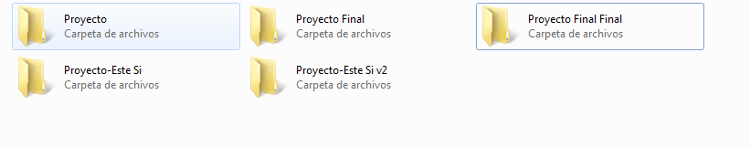

Introducción a Git
Sistema de Control de Versiones (VCS) Distribuido

¿Que es un VCS?
¿Qué es el control de versiones, y por qué debería importarte? El control de versiones es un sistema que registra los cambios realizados sobre un archivo o conjunto de archivos a lo largo del tiempo, de modo que puedas recuperar versiones específicas más adelante. Podemos categorizar los VCS en tres tipos:
Local, Centralizado y DistribuidoSistemas de control de versiones locales
El método de control de versiones usado por mucha gente es copiar los archivos a otro directorio, quizás indicando la fecha y hora en que lo hicieron.

Sistemas de control de versiones centralizados
Sistema centralizados para el trabajo colaborativo,todo en un Servidor. Un claro ejemplo es Subverion.

Sistemas de control de versiones distribuidos
En este tipo de sistema el repositorio es replicado en cada cliente por lo cual la informacion no se encuentra en solo equipo. Es en esta categoria donde se encuentra GIT

Fundamentos de Git
La principal diferencias de Git con otros VCS, es que VCS como Subversion van guardando un delta con los cambios en cada archivo. Git por el contrario ocupa snapshots de los archivos la momento del cambio, y para ser mas eficiente, los archivos que no se han modificados, se guarda un puntero o referencia hacia el archivo
Subversion

Git

Operaciones Locales
La gran mayoria de las operaciones con el repositorio se realizan en local por lo que eso le da una ventaja de poder trabajar offline y de mayor velocidad en las operaciones
Integridad
Git ocupa un hash en SHA-1 para realizar el checksum de los arhivos y asi poder tener integridad entre ellos,cualquier operacion debera pasar por este control.
Estados de los archivos
- Committed
- Modified
- Staged

Ejemplo interactivo de las areas y estados en Git
Flujo de Trabajo básico
- Modificas una serie de archivos en tu directorio de trabajo.
- Preparas los archivos, añadiendo instantáneas de ellos a tu área de preparación.
- Confirmas los cambios, lo que toma los archivos tal y como están en el área de preparación, y almacena esa instantánea de manera permanente en tu directorio de Git
Instalacion de Git
-
Linux:
Por medio laherramienta básica de gestión de paquetes que trae cada distribución -
Windows:
http://git-scm.com/download/win -
Windows(GUI):
http://git-scm.com/downloads/guis
http://code.google.com/p/tortoisegit/
Configurando Git por primera vez
Git trae una herramienta llamada git config que te permite obtener y establecer variables de configuración que controlan el aspecto y funcionamiento de Git
Configurando Tu identidad
Esto es importante porque las confirmaciones de cambios (commits) en Git usan esta información, y es introducida de manera inmutable en los commits que envías
$ git config --global user.name "John Doe"
$ git config --global user.email johndoe@example.com
$ git config --list
Con este ultimo comando podemos revisar nuestra configuraciones.
Creando un Repositorio
Para comenzar un projecto git debemos ocupar el comando:
$ git init
Esto crea un nuevo subdirectorio llamado .git que contiene todos los archivos necesarios del repositorio.
Agregar Archivos a un Repositorio
Con el comando git add agregar un archivo al seguimiento y/o tambien al staged area. Una ves agregados al staged area podemos hacer commit.
$ git add README
$ git commit -m 'Primer Commit en Git'
Esto realizara un commit a mi repositorio local.
Clonando un repositorio existente
Si deseas obtener una copia de un repositorio Git existente —por ejemplo, un proyecto en el que te gustaría contribuir— el comando que necesitas es git clone.
$ git clone git://github.com/schacon/grit.git
Este es el equivalente al checkout de Subversion.
Ciclo de vida de los archivos en git

Continuará...
- Viendo el histórico de confirmaciones
- Deshaciendo cosas
- Trabajando con repositorios remotos
- Creando etiquetas
- Ramificaciones en Git
- ¿Qué es una rama?
- Procedimientos básicos para ramificar y fusionar
- Gestión de ramificaciones
- Flujos de trabajo ramificados
- Ramas Remotas
- Reorganizando el trabajo realizado
- Git en un servidor
- Los Protocolos
THE END
Ayuda Adicional:Git Developer CheatSheet